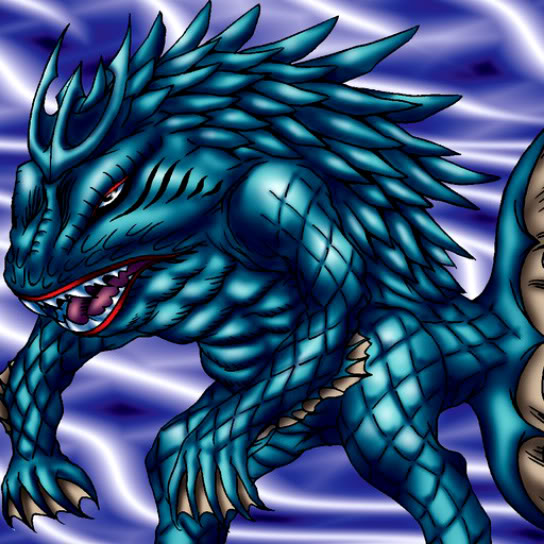

Wow Warrior

STATS
ATK: 1250
DEF: 900DECK COST
Deck Cost per Card: 22Fusion List (7 Possible Fusions)
- Wow Warrior + Baby Dragon = Kairyu-Shin
- Wow Warrior + Bat = Misairuzame
- Wow Warrior + Crawling Dragon = Kairyu-Shin
- Wow Warrior + Dharma Cannon = Misairuzame
- Wow Warrior + Great Bill = Tatsunootoshigo
- Wow Warrior + Milus Radiant = Tatsunootoshigo
- Wow Warrior + Mystical Elf = Amazon of the Seas